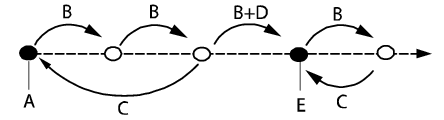

HotEdit 是对编程位置进行调节的一项功能。 该功能可在所有操作模式下运行，即使是在程序运行的情况下。 坐标和方向均可调节。
HotEdit 仅用于已命名的 robtarget 类型位置（请参见以下限制）。
HotEdit 中的可用功能可能会受到用户授权系统 (UAS) 的限制。
有关 HotEdit 菜单的详情，请参阅 HotEdit 菜单 一节.
点击 Apply（应用）后，正在执行的程序将直接使用调节值。如果调节发生在程序或动作指针附近，则可能难以精确预测调节更改将何时生效。因此，如果在程序运行的情况下应用偏移值，务必要了解机器人在程序中所处的位置。
但是，新值只有在使用了 Commit（提交）命令之后才能储存于基准中。
以下介绍了如何利用 HotEdit 调节编程位置：
操作 | |
1 | 在 Programmed targets（预设目标）窗口中，选择将要调节的位置，然后点击箭头将其添加到 Selected targets（选定目标）。 |
2 | 点击 Tune Targets（调节目标），然后依次选择调节模式（线性、重定向或外轴）和坐标系（工具或工件）。 |
3 | 点击 + 或 - 指定 x、y 和 z 方向上位置调节的精确值。 选择增量定义这些按钮的单步幅度。 |
4 | 点击 APPLY（应用）以启用新值。如果程序正在运行，则将直接应用偏移值。 |
5 | 如果您对结果感到满意，并希望调节的位置成为基准的一部分，请点击 Baseline（基准），再点击 Commit Selection（提交选项）。 |
6 | 但是，如果选定的目标需要进一步调节，您可以点击 Baseline（基准），再点击 Restore Selection（恢复选项）以重新开始，或者您只需要继续进行调节直到满意。 |
您可将以后需要调节的位置选择保存到控制器海量储存单元中。 如果系统使用了 UAS，这可能是选择调节位置的唯一方法。
对于所选项目的操作命令位于 File（文件）目录中：
Save Selection As（选项另存为） | 确保 Selected targets（选定目标）窗口只显示了要保存的位置。点击 File（文件），然后点击 Save Selection As（选项另存为）。输入文件名以及文件描述（可选），然后点击 OK（确定）。 |
Open Selection（打开选项） | 点击 File（文件），再点击 Open Selection（打开选项）。然后点击您想要使用的选项，点击 OK（确定）。 |
Clear Selection（清除选项） | 点击 File（文件），再点击 Clear Selection（清除选项），即可清除 Selected targets（选定目标）区域. |
基准可定义为测量未来更改的参照。使用基准概念，能够取消任何调节操作并恢复至最新的基准中存储的位置值。使用 Restore（恢复）命令即可执行此项操作。
执行 Commit（提交）命令后，将用新的偏移值更新基准，而旧值将从程序内存中删除。
使用基准菜单应用或拒绝调节。
Restore Selection（恢复选项）将放弃对当前选定位置的所有调节，将其恢复至最新的基准值，这意味着位置偏移值将为 0,0。
Restore Entire Program（恢复整个程序）将放弃自最近一次执行 Commit（提交）命令以来对编程位置作出的所有调节。其中可能包含了对于同一任务的多个 HotEdit 会话。如果系统使用的是 Absolute Limit ModPos，则所有 Modify Position（修改位置）命令也将从 Program Editor（程序编辑器）中撤销。
Commit Selection（提交选项）将会把当前选定位置的偏移值应用到基准。
Commit Entire Program（提交整个程序）将应用对编程位置的“所有”调节。其中可能包含了对于同一任务的多个 HotEdit 会话。如果系统使用的是 Absolute Limit ModPos，则其还包括在 Program Editor（程序编辑器）中执行的 Modify Position（修改位置）命令。
满足以下所有标准的目标都属于基准的一部分：
数据类型必须是 robtarget 或 jointtarget
不得在例行程序中进行局部声明
不得在目标数组中进行声明
下图解释了基准的概念并描述了点的移动、恢复和提交。 从原始基准 (A) 开始，点移动 (B) 两次。 如果您后悔作出更改，可以选择执行恢复命令 (C)。 但是如果您继续移动该点，然后执行提交命令 (B +D)，则将建立新基准 (E)，届时将无法恢复至原始基准。 如果再移动一次，然后恢复，则该点将移回至最新的基准 (E)。

A | 原始基准 |
B | 移动选定点 |
C | 恢复 |
D | 提交 |
E | 新建基准 |
下例显示了 Restore Selection（恢复选项）和 Restore Entire Program（恢复整个程序）与初始状态之间的差异。相同方法同样适用于 Restore Entire Program（恢复整个程序）与 Commit Entire Program（提交整个程序）。
操作 | |
1. | 将 robtargets p10 和 p30 将添加到 Selected Targets（选定目标）并进行调节。 |
2. | 将 p10 从 Selected Targets（选定目标）中删除 |
3. | 重调 p30。 |
4. |
|
如果外部轴在至少一个选定的 robtarget 中启动，可使用 HotEdit 来调节外部轴。 只调节带活动值的轴。
HotEdit 只可能对指定的 robtarget 进行调节（比如，p10 和 p20）。（* 树形图中不显示 robtarget。）
如果声明 robtarget 作为数组，则其必须使用要在 HotEdit 中进行修改的数字进行索引。
只有当目标是基准的一部分时，才能对其进行 HotEdit 调节。 如果目标不是基准的一部分，将不会在 HotEdit 树形图中显示，因为这些目标无法被选中来加以调节。 这表明在例行程序中被声明的目标将不能获得显示。
HotEdit 调节仅适用于 robtargets。（只能通过使用 Program Editor（程序编辑器）中的 Modify Position（修改位置）才可进行调节 Jointtargets。）如果系统使用的是 Absolute limit ModPos，这些 jointtargets 仍然是基准的组成部分，但在使用 Restore Entire Program（恢复整个程序）和 Commit Entire Program（提交整个程序）时，它们将受到影响。
 | 注意 更多关于 Absolute Limit ModPos 的详情，请参见技术参考手册 - 系统参数，章节类型 Controller - 类型 ModPos Settings。 |
User Authorization System 可用于限制 Hot Edit 功能，仅允许用户编辑预先选定的位置。要加载这些位置，可点击File（文件），然后点击Open Selection（打开选项）。然后可按常规方式调节选定位置。
技术参考手册 - 系统参数。